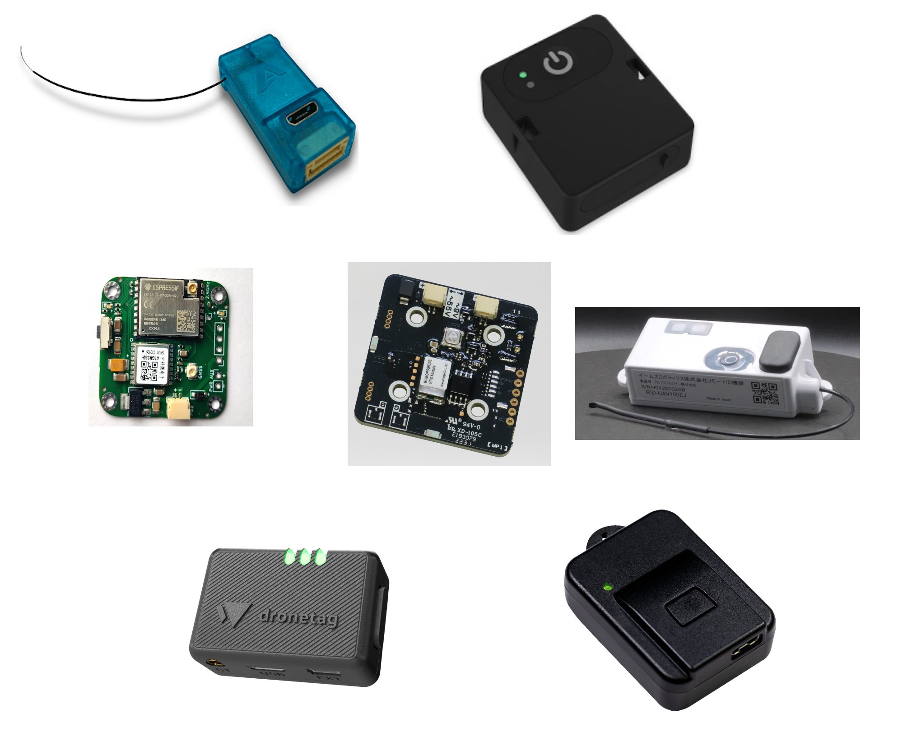
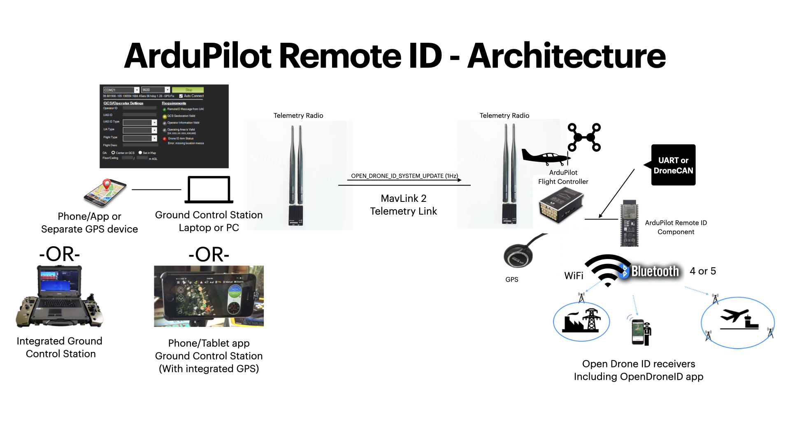
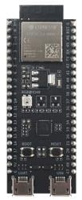

[copywiki destination=”copter,plane,rover”]
Remote ID (aka Drone ID)¶
{kind=link}
Remote IDs are becoming a legal requirement in some countries. Below is a list of devices compatible with ArduPilot. There is a quite nice explanation and list of frequently asked questions regarding Remote ID available here (site hosted by Dronetag)
Variations¶
There are basically two differing Remote ID requirements, although specifics vary according to country/region: devices integrated into OEM supplied systems, and add-on beacons for DIY and existing vehicles.
For the ones users will be adding, there are variations on whether the device gets GPS position information via an integrated GPS or from the autopilot using its position and other information for its GPS. If connected to the autopilot for position and other information via MAVLink, either proprietary firmware or firmware conforming to the OpenDroneID standard is used to implement Remote ID(see following section) can be used. Power can be supplied either from the vehicle (MAVLink connection or to the vehicle’s power), or via a small rechargeable battery (completely self contained units which can be transferred between vehicles easily).
Avaliable Devices¶
Note
this list will periodically be updated and may not contain all devices at any given time.
MAVLink-enabled devices that connect to the autopilot:
Stand-alone devices:
Stand-alone devices with optional MAVLink capability:
Note
Connecting devices using MAVLink will eliminate the need for a battery for standalone devices. It can also further enable additional features and information for the Remote ID.
Note
US FAA Compliant devices are listed here
OpenDroneID Compatible devices (support included in ArduPlane 4.0 and later)
OpenDroneID¶
{kind=link}
ArduPilot provides support for OpenDroneID in firmware versions 4.0 and later via MAVLink to an OpenDroneID compatible RemoteID module attached to either a serial port or DroneCAN port on the autopilot.
In order to provide tamper protection, a special autopilot firmware must be built and loaded on the autopilot which: enables this feature, prevents loading non-compliant firmware via GCS or normal uploaders, and provides further tamper-proofing.
For details on building firmware with the OpenDroneID feature, see OpenDroneID for details.
ArduRemoteID¶
ArduPilot also has developed firmware for ESP32-S3 and C3 development boards for an OpenDroneID compatible Remote ID module for attachment by serial MAVLink connection or DroneCAN to the autopilot. A binary for flashing the board, along with instructions, is available here. Note, this firmware is rapidly evolving, so check for updates frequently. This device can be attached to the autopilot by USB, serial, or DroneCAN (if an external CAN transceiver is attached)
{kind=link}
This firmware provides security signing and locking features for tamper resistance on the ArduRemoteID module:
if the board has a USB programming port, access to that port, as well as the DroneCAN and MAVLink parameters, normally setup before shipment to customers can be locked, either temporarily or permanently, requiring a security key pair and secure commands to be used to alter those parameters.
when in a locked state, the only way to update firmware is to use a secure WIFI web interface provided by the module using a public/private key pair.
See the detailed instructions in the ArduRemoteID README.md file.
End User Data Setup and Use¶
Mission Planner (must be the latest beta version) has a tab in its DATA view (Drone ID) for OpenDrone ID operation which allows connection of the required external serial GPS to obtain operation location, and set up tabs for UAS and Operator IDs if required by your local jurisdiction. It also shows the Remote ID status. The ground station will also have status and pre-arm failure messages displayed if there are problems.
Other GCS are developing similar OpenDroneID setup wizards.
Testing¶
See OpenDroneID for information on how to build firmware for OpenDroneID and to run the code on autopilot to experiment with parameters, etc.
Android Application¶
There are Android phone applications OSM and DroneScanner in the Google Play Store that allows one to display RemoteID Bluetooth and/or WIFI transmissions and vehicle data.
Other references:
The OpenDroneID OSM android app can be used to check the Remote ID is working (source code is here)
If you know of other available devices please add a comment in this issue